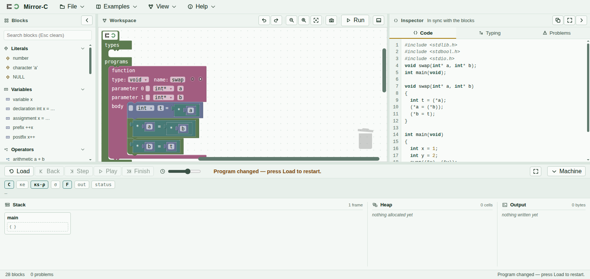
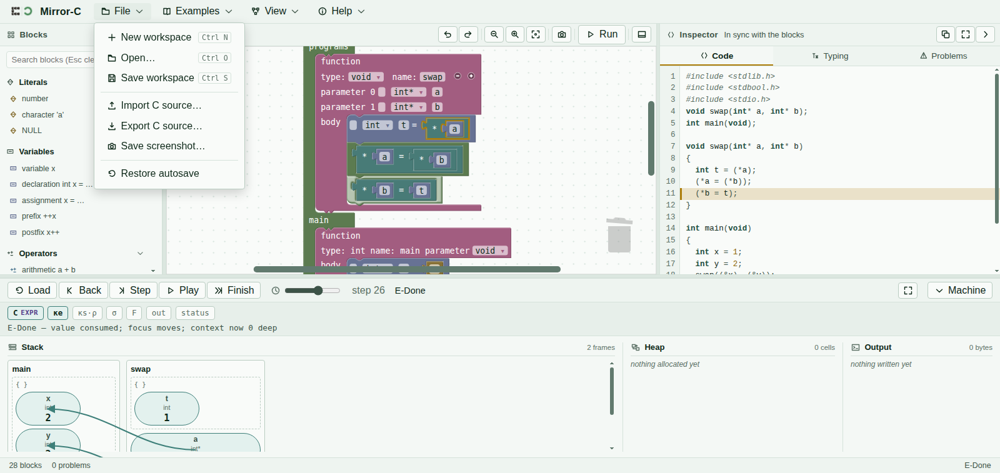

The first half hour
You do not need to know Mirror-C to use it. There are two things worth learning before you start: the blocks are the program, and nothing runs until you press Load.
Your first program
- Open an example. Examples in the menu bar lists twenty-six programs with a sentence each. Start with Hello, output or One cell, one value. Hovering shows you what a program is about; clicking loads it.
- Or build one. Drag blocks out of Blocks on the left and drop them into the
mainregion. Blocks connect only where they fit — if one will not go somewhere, that socket wants a different kind of thing. - Look at the Code tab. On the right, your blocks are shown as ordinary C text. It updates as you build, so you can always check what you have actually written.

main in its own below.Load, then Step
The controls along the bottom, left to right:
| Button | What it does |
|---|---|
| Load | Hands the current blocks to the machine and puts it at step zero. Nothing you build has any effect until you press this. Edit the blocks afterwards and the status line will tell you to press Load again. |
| Step | One small step forward. Small: evaluating x + 1
takes several. |
| Back | One step backwards. Everything undoes, including printed output. |
| Play | Steps repeatedly at the speed of the slider beside it. Press again to stop. |
| Finish | Runs to the end at once. |
Finish tells you the answer. Step tells you why it is the answer. If a program surprises you, press Back until just before the surprise and step through it again.
Reading the picture
Work from the bottom of the screen upwards.
- Stack. One box per function call that is still running. Each box holds that call's variables: name, type, and the value right now. A cell with nothing in it yet is drawn empty — that is a variable that has been declared but not assigned.
- Arrows. A pointer is an arrow to the cell it points at. If two arrows land on the same cell, those two pointers are aliases, and writing through one changes what the other reads.
- Heap. Cells from
malloc. They stay untilfree, and then they are marked dead rather than removed — so an arrow still pointing at one is visibly pointing at something dead. - Output. What has been printed so far.
- The sentence above them names the rule that just fired and says what it did, in words. It is the fastest way to find out what the last Step actually accomplished.
When something is wrong
Two different situations, and they show up in two different places.
- The program cannot be built. An empty socket, a missing piece. The Problems tab names it and the status bar counts it. Note that an empty socket is reported when you press Load — Problems may read “No problems” until then, so if Load does not seem to work, look at Problems.
- The program runs and then stops. The machine reached something undefined. A banner names it — a null pointer followed, a pointer into a frame that has returned, memory used after it was freed — and the picture is frozen at the moment it happened, which is usually enough to see the cause.
Keys worth knowing
| Key | |
|---|---|
| R | Load |
| → or . | Step |
| ← or , | Back |
| Space | Play / pause |
| Ctrl+Z | Undo an edit to the blocks |
| Ctrl+Shift+P | Command palette — every command by name, if you would rather type than hunt |
| Esc | Close whatever is open |
Saving and opening
File saves your workspace as a .m_c file and opens one back. It also exports your
program as plain .c text, and saves a screenshot of the canvas. Work is kept
automatically as you go, so closing the tab by accident is recoverable.
